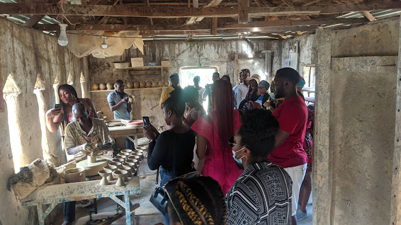

0803 452 8805
About Us

About
Bwari Pottery Village is a unique cultural enclave nestled in the scenic hills of Bwari, a town in the Federal Capital Territory (FCT) of Nigeria. Steeped in rich tradition and history, this artisanal village is renowned for its remarkable pottery craftsmanship, dating back centuries. The village serves as a living testament to Nigeria's vibrant artistic heritage and continues to be a hub of creativity and cultural preservation.
Mission
Through its artistic excellence and dedication to cultural preservation, the village continues to serve as an enchanting destination for those seeking to experience the beauty and significance of Nigeria's artistic legacy. As time progresses, it is essential to sustain the village's heritage, fostering a legacy that will inspire generations to come and promote Nigeria's cultural richness on the global stage. The village produces a wide range of ceramic products, catering to both domestic and artistic needs The pottery industry in Bwari Pottery Village contributes significantly to the local economy. Pottery-making provides employment opportunities for skilled artisans and helps sustain their livelihoods. The influx of tourists and the sale of pottery products contribute to the economic growth of the village and its surrounding areas.
Orgin
The origins of Bwari Pottery Village can be traced back to ancient times when pottery-making was an essential part of daily life for local communities. The traditional skills and techniques were passed down from generation to generation, preserving the craft as an integral aspect of Nigeria's cultural identity. Over time, the village evolved into a significant center for pottery production, attracting both locals and tourists seeking to experience the artistry and historical roots of the region.
Tourism and Cultural Interaction
Bwari Pottery Village has gained recognition as a cultural attraction, drawing tourists, researchers, and art enthusiasts from both within Nigeria and abroad. Visitors have the opportunity to witness the pottery-making process firsthand, interact with the artisans, and participate in pottery workshops to learn the traditional techniques. The cultural exchange between visitors and the local community fosters mutual appreciation and understanding of Nigeria's diverse cultural heritage.
Innovation and Evolution
While preserving tradition is at the core of our mission, we also embrace innovation and creativity. Our village serves as a hub for artistic exploration, where local artisans collaborate with international artists, sparking a dynamic fusion of ideas and techniques that propel our craft into the future. Our mission extends to empowering the skilled artisans who bring life to clay through their deft hands and creative minds. We provide them with the resources, training, and support they need to flourish as artists and entrepreneurs. By empowering our local talent, we create a sustainable ecosystem that uplifts the community and fosters economic growth.

Donations
We invite kindred spirits and patrons of the arts to join us in our mission. Your support, whether through contributions, patronage, or advocacy, strengthens our resolve to preserve Nigeria's pottery heritage for generations to come. Together, let's shape a future where tradition and creativity intertwine, inspiring the world with the beauty of Bwari Pottery Village.